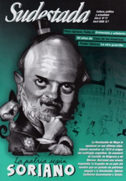

Buscar
De piratas, fantasmas y dinosaurios
Hace casi trece años, Osvaldo Soriano nos abría la ventana a un mundo en el que disímiles personajes se alternaban en historias a veces heroicas, otras grotescas, siempre entrañables de Piratas, fantasmas y dinosaurios. En algunas, el sur era telón de fondo para las aventuras de un futbolista retirado en desgracia, o de un idílico padre.
Edición N° 77
Abril 2009
Revista bimensual
Comprar edición impresaSumario
- La patria según Osvaldo Soriano
- De piratas, fantasmas y dinosaurios
- Poder Obrero: Sueños de revolución
- Casa/50
- Música y dictadura (2ª parte)
- Cuesta arriba por tierras riojanas
- "Aburrir al lector es un pecado imperdonable"
- Viaje al corazón de un pueblo hecho de harina
Compartir Articulo
En esas mismas tierras australes, otros personajes -menos singulares, más ordinarios- acaparan hoy la atención. Patotas civiles amedrentan a manifestantes en El Bolsón, donde el Intendente supervisa la faena, garrote en mano. Camioneros y automovilistas funcionan como grupo de choque, y se turnan para agredir a docentes en huelga que cortan la ruta en Chinchinales.
El fantasma del asesinato del maestro Fuentealba sobrevuela la zona cuando un concejal rionegrino, mitad insolente y mitad patotero, advierte a algunos profesores que no deberían olvidar lo mal que terminó la huelga de 2007. Pero los matones de Río Negro que queman las carpas de los docentes en lucha o los gases que la policía arrojó hace apenas un par de semanas a los maestros en Viedma, no se ven ni se huelen desde Buenos Aires. Una represión que no se televisa; un trato gubernamental que difiere mucho del que se prodiga a estancieros y terratenientes cuando son ellos los que cortan una ruta.
El foco está en otro lado. La magia de la televisión hace que artistas de varieté en declive tengan la aparente potestad de fijar la agenda de discusión nacional. Los multimedios van poniendo como al descuido en boca de mercachifles su línea editorial que, presentada como el clamor de quienes están "cansados de los derechos humanos de los delincuentes", reclama más tiros en la nuca. Mano dura: la misma que pide que se legitime una pena de muerte que ya se aplica a manos de una policía de recaudaciones mal habidas y el gatillo siempre dócil. Luego de dar de comer a la paranoia de las señoras gordas de Belgrano con noticias policiales repetidas hasta el hartazgo, la gran prensa sazona el menú con discusiones sobre pena de muerte, o conveniencia de la colimba, todo con suma liviandad. En simultáneo, decoran el panorama transmitiendo el conciliábulo de algunos estancieros que planean el próximo desabastecimiento, o dando horas de aire a las muecas circenses para el futuro número electoral en el que oficialismo y oposición sacan boleto en primera fila.
En tanto, no se abordan temas centrales, o se abordan pasándoles siempre por el costado. Pero la realidad termina superando a la ficción de los multimedios. Por algunas rendijas trascienden noticias que nos hablan de escuelas en Villa Lugano, donde el Gobierno de la Ciudad amontona a cuarenta pibes en aulas para no más de veinticinco, a la par que entrega subsidios millonarios a selectos colegios privados porteños; noticias de escuelas en el Conurbano que no tienen agua potable; de diez jurisdicciones con conflictos docentes y el corte de ruta en Río Negro que, pese a todo, resiste. Es decir, noticias de un sistema educativo nacional en crisis ante el cinismo de un gobierno con discursos altisonantes y políticas mezquinas, que a la hora de actuar, pacta con caciques sindicales condiciones inaceptables, y no sabe qué hacer frente una incipiente rebelión de los educadores.
En medio de este panorama de silencios y oportunismo mediático, es tal vez donde más se extraña a Soriano y su mirada, a su falta de rodeos para la crítica ante tanto miserable. Y se extrañan sus historias, porque en estas otras que vamos viendo, abundan piratas sin encanto, fantasmas obsecuentes y dinosaurios políticos que quieren instalar un patíbulo en cada villa miseria.
Comentarios

Sudestada
El colectivo de Revista Sudestada esta integrado por Ignacio Portela, Hugo Montero, Walter Marini, Leandro Albani, Martín Latorraca, Pablo Fernández y Repo Bandini.
Articulos más vistos


LIBRERÍA SUDESTADA

Colección infantil

Distribuidora de Libros

Suscripción

Sudestada en URUGUAY

Otros articulos de esta edición
 Papeles amarillos
Papeles amarillos
Poder Obrero: Sueños de revolución
Organización Comunista Poder Obrero. Una aproximación al Socialismo Revolucionario en los '70 es el primer libro dedicado a la historia ...
La patria según Osvaldo Soriano
La Revolución de Mayo lo apasionó en sus últimos años. Intentó encontrar en 1810 el origen del naufragio argentino. Se ...
Música y dictadura (2ª parte)
Luego de años de censuras y autocensuras, los músicos eligieron aceptar su condición de creadores mutilados sabiendo que el régimen ...
"Aburrir al lector es un pecado imperdonable"
La historia como fuente narrativa; la pasión como eje de la historia. Después de narrar las vidas de Pancho Villa ...
Casa/50
A cincuenta años de su fundación, Casa de las Américas es sin dudas una referencia para la cultura y el ...
Cuesta arriba por tierras riojanas
Como la cabra que trepa el monte, los campesinos de La Rioja dan pasos firmes sobre terreno escabroso, buscando una ...